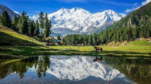

My Trek to Fairy Meadows
Nestled at the base of Nanga Parbat, Fairy Meadows is a slice of heaven. My journey started in Islamabad and ended in the lush green meadows surrounded by snow-capped mountains. The jeep ride from Raikot Bridge was thrilling, followed by a 3-hour hike that tested my limits but rewarded me with unimaginable views.
Read full story